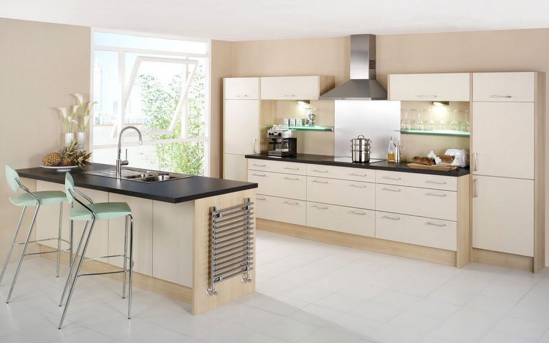
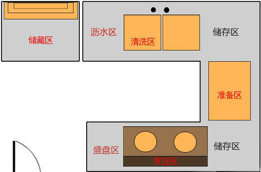
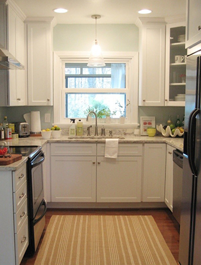

从视觉逆袭：开放式设计
厨房设计最基本的是三角形空间，也就是水槽、操作台和灶台的位置，最理想的就是一个三角形，但是狭长状的厨房很难做到这点， 而一字形与L形设计则成为最常见且最适宜的厨房布局——但对于小厨房我们可以或者可以考虑下开放式设计。
开放式设计的作用主要是把客餐厅融合起来达到视野开阔的效果。很多人都觉得开放式厨房不适合小户型，实际上只要控制得好，开放式不 失为小厨房绝妙的选择。小户型采用开放式厨房，环境要求通风、透气良好，而主人的使用习惯也很重要，较为适合饮食清淡、烹饪低油量、 开伙频率相对没那么频繁的家庭。
从收纳逆袭：U型设计
在中国毕竟还是喜欢每天在家吃中式住家饭的人多，所以大多数采取的还是封闭式厨房，而封闭厨房要容纳的东西相当多，厨具餐碟、食材、 大小厨电、烘焙用具等等，东西多还地方小的话，走进厨房几乎令人转不过身来——我们可以考虑用U型厨房
中小厨房建议使用U型设计，本质上是为了令厨房的洗切炒工序更加流畅，更重要的能够有效地节省用地面积、同时又可以增加收纳，但想要采用 U型厨房，厨房本身需要是规则的长方形、门要开在U型口处(即长的那边)。
从习惯逆袭：台面注意五区

从取、洗到切、炒、装，是在厨房煮一顿饭必经的几个环节，所以除了冰箱之外，我们的操作台一般按序分布清洗区、准备区、烹饪区，而要保证 在小厨房里高效操作这些步骤而不会慌乱、绊手，除了保证准备区这个黄金领域，还要注意常被忽略的盛盘区和沥水区保证。

准备区用来放砧板等工具、切菜准备的区域，忙起来东西最多，所以长度至少要60cm以上;而沥水区和盛盘区分别是水槽到墙边的距离、灶台到墙边 的距离，建议条件允许的话分别保留至少30cm的位置。
从门窗逆袭：门窗位置优化组合
除了用整体形状设计、工作区设置来提高小厨房的利用效率之外，即便是同样的空间面积、我们还能通过门和窗的位置优化厨房的利用率和便利性。

以正常的矩形厨房为例，不外乎长短两边，我们可以选择长边开门短边开窗或者是短边开门长边开窗(极少)、短边开门短边开窗。我们不难发现，当选择短边 开门短边开窗的时候，我们合理的准备区位置会被压榨得比较小，而我们选择长边开门短边开窗、搭配上U型的布局，我们的准备区就能够保留较大面积，方 便我们进行最重要的下厨工作。